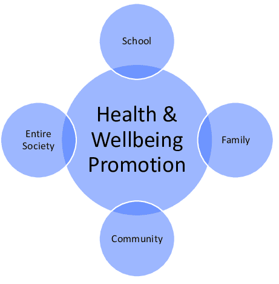
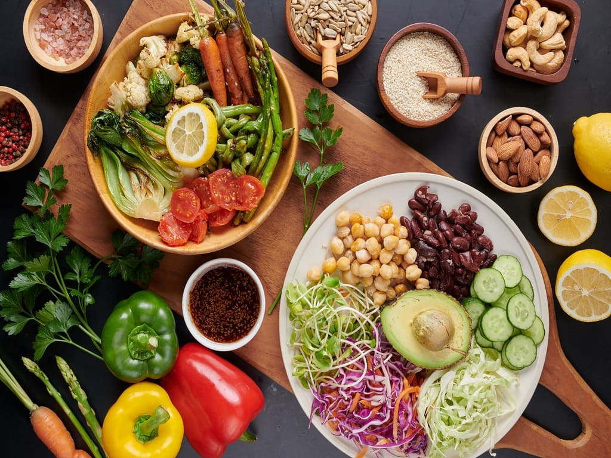
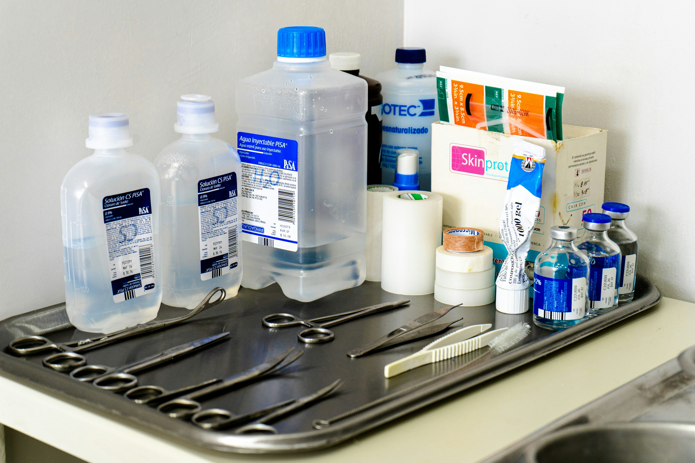

Personal Health & Hygiene
- Importance of daily hygiene routines
- The role of nutrition in maintaining health
- Oral hygiene and its impact on overall health
- Mental health and self-care practices
- Sleep hygiene and its role in productivity
- Hygiene habits in adolescence vs adulthood
Disease Prevention & Public Health
- Role of handwashing in preventing infections
- Vaccination and community health
- Hygiene in pandemic preparedness
- Impact of poor sanitation on public health
- Hygiene education in schools

Nutrition & Lifestyle
- Balanced diet and immunity
- Hydration and its effects on health
- Hygiene in food preparation and storage
- Physical activity and hygiene (e.g., gym cleanliness)
- Clean eating vs processed food habits

Environmental & Medical Hygiene
- Hospital hygiene protocols
- Waste disposal and its health implications
- Role of sanitation in disease control
- Water purification and hygiene
- Air quality and respiratory health
- Hygiene in rural vs urban settings